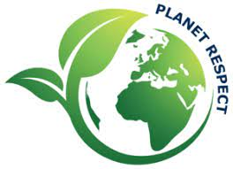
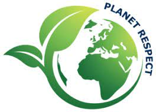
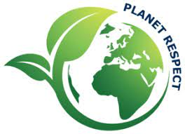
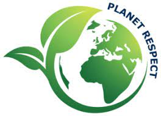

 


Informations :Agir pour l'Environnement est une association de mobilisation citoyenne oeuvrant pour une planete vivable. L'association fait pression sur les responsables politiques et decideurs economiques en menant des campagnes reunissant un large reseau d'associations et de citoyens. Afin de garder intacte son independance d'action, l association refuse tout financement issu des pouvoirs publics. L'association se bat pour : la preservation de la biodiversite, l interdiction des neonicotinoides, soutenir les moratoires adoptes par les maires en vue d interdire localement les pesticides ainsi que pour un soutien accru a l agriculture biologique.
Informations : Panete mer est une association d interet general. Le but est de concilier a la fois respect des equilibres naturels fondamentaux et developpement economique et social. Assurer l avenir des hommes et des femmes qui font vivre le littoral, c est avant tout preserver la richesse et l equilibre des ecosystemes marins. Et pour cela, il est necessaire : d ameliorer la connaissance sur les ecosystemes et les ressources marines, de favoriser le dialogue entre les acteurs, plutot que la confrontation ainsi que de replacer les pecheurs, professionnels et amateurs, au centre de la gestion des peches, pour qu ils deviennent de veritables gestionnaires de la ressource.
Informations :L association mene des actions fortes pour soutenir les victimes des pesticides (ce qui concerne aussi bien les utilisateurs professionnels que les particuliers) dont elle recueille les temoignages. Elle apporte des conseils juridiques et scientifiques à ces personnes. Ddans le cadre de cette campagne l association a publie une enquête sur l exposition aux pesticides des salaries viticoles et des riverains des vignes a partir d analyses de cheveux
Informations : Les Amis de la Terre militent pour une transition vers des societes soutenables au Nord comme au Sud. Notre approche integre à la fois des problematiques sociales, economiques et environnementales.